Getting Started
Overview
When Smartsheet is integrated with Salesforce, users can link project sheets to accounts, contacts, opportunities, other CRM objects or any custom object for real-time collaboration on project tasks and related files and discussions.
Starting with version 2.2, the Smartsheet for Salesforce app also includes the Data Manager feature (currently in beta). The Data Manager allows you to export Salesforce data to Smartsheet, import Smartsheet data into Salesforce, and save export and import configurations as reusable workflows that you can use any time.
Benefits of using the Data Manager include, but are not limited to, the following:
- Use Smartsheet to publish selected Salesforce data and share with internal and external stakeholders for review and feedback.
- Use Smartsheet as a light-weight data editing tool to make bulk changes to your Salesforce data. Example: export your selected Opportunities to Smartsheet, update, and import them back into Salesforce.
- Enable your project managers and other stakeholders to view and update Salesforce data using Smartsheet.
- Import your Smartsheet data into Salesforce so you can include it in your Salesforce reports.
Requirements
To use the Smartsheet for Salesforce app, there are a few requirements:
- Smartsheet user license.
- Access to Salesforce sandbox or production instance.
- To access the Data Manager feature, you will need to have Smartsheet for Salesforce version 2.2 or later installed.
Smartsheet - Plans, Pricing, and Assistance:
After installing Smartsheet for Salesforce via the AppExchange, your users can start a free 30-day trial of Smartsheet by launching Smartsheet from within Salesforce and creating their first sheet. The user’s email address (in Salesforce) serves as their email address for their Smartsheet account. Any users on a Trial or Basic account can be can be absorbed into a multi-user or domain license at any time, should you choose to license Smartsheet for your organization.
If a user is neither added to an existing license nor elects to upgrade their account before their trial expires, he or she will lose the ability to create sheets. They will continue to have access to sheets shared to them by other licensed users.
Support
To learn more about Smartsheet or review licensing options:
- Visit our website at www.smartsheet.com
- Browse our help articles
- E-mail support@smartsheet.com
- Call us at (425) 283-1870
For technical support of the Smartsheet for Salesforce app, please send us a detailed message at api@smartsheet.com. If reporting an issue, please include the following in your message:
- Screenshots of the error message
- Exact steps to reproduce the error
Installation
If you are a new user, please follow the steps below to install the Smartsheet for Salesforce.
Getting the App
First, you need to get the Smartsheet for Salesforce app from Salesforce.com’s AppExchange.
-
Go to the Smartsheet listing on Salesforce.com’s AppExchange.
-
Ensure you are logged in with your Salesforce administrator account using the Login or Register button in the page header.
-
Click Get It Now.
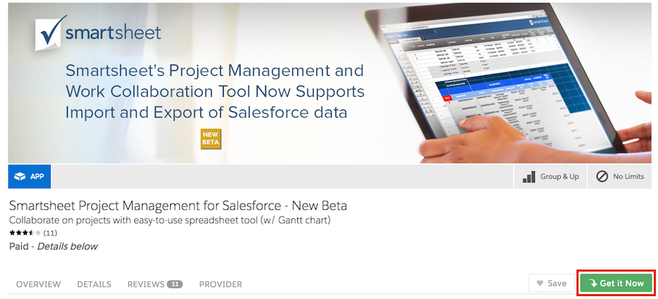
Installing the App
-
Select if you would like to install the Smartsheet for Salesforce application in your Production or Sandbox Salesforce environment.
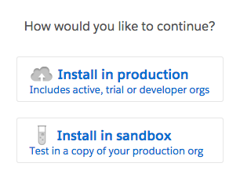
-
Read and accept the terms and conditions, and then click Confirm and Install.
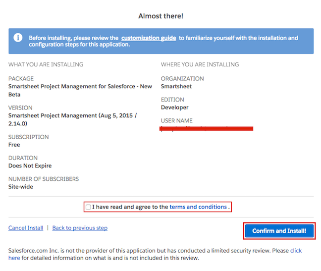
-
Select Install for All Users and click Install. (To view a list of permissions for the package, click on API Access.)
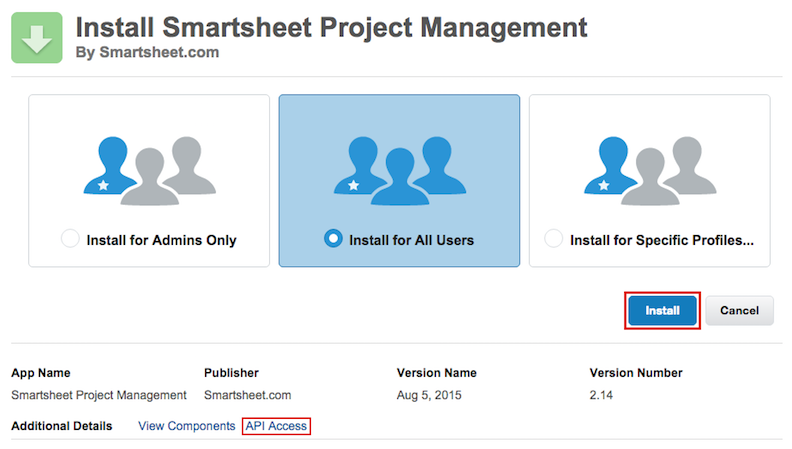
-
Select Yes, grant access to these third-party web sites option, and then click Continue.
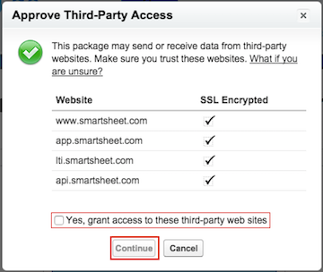
-
Once the installation has completed, click on Done on the confirmation page.
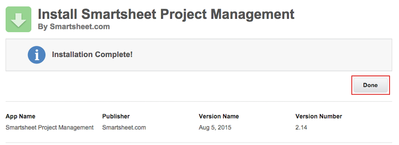
Configuration
This section covers the process to configure Smartsheet within Salesforce. These steps are recommended in order to provide the best experience possible.
Set Custom Field Relationships
By default, Smartsheet for Salesforce allows you to relate Smartsheets to the standard Account, Opportunity, Contact, or Case objects in Salesforce. If you do not need to relate Smartsheets to other types of Salesforce objects, you can skip this section.
If you want the ability to relate Smartsheets to other types of Salesforce objects, you must create a relationship between the Smartsheet object and the other object types. This section of the documentation describes that process.
To create a relationship between the Smartsheet object and another object type:
-
Go to Setup > Create > Objects.
-
On the Custom Objects page, click Smartsheet. The Smartsheet object page appears:
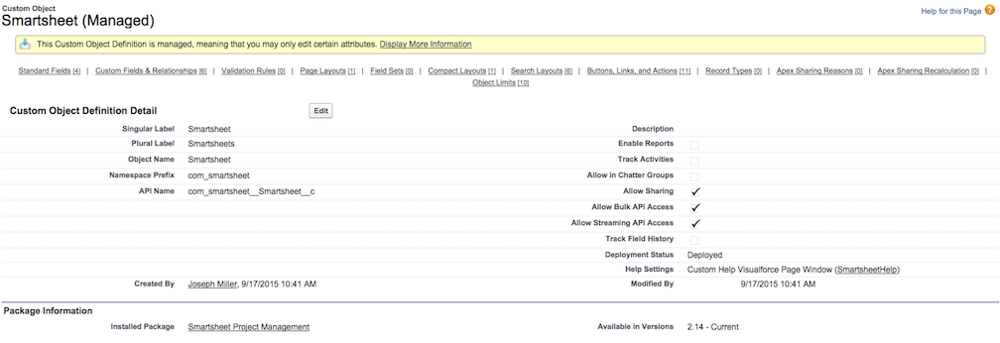
-
Click Custom Fields & Relationships, then click New:

-
Select the Lookup Relationship option, then click Next.
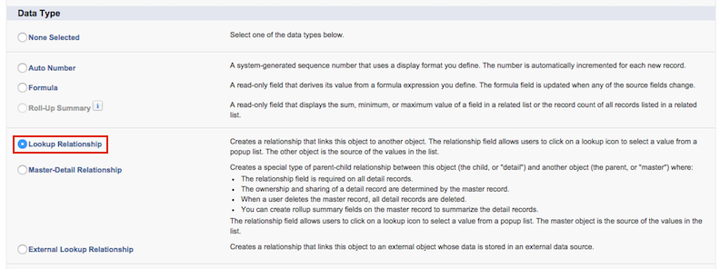
-
From the Related To list, choose the object to which you want to link Smartsheets, then click Next.
(In this example, we will use the Product object.)
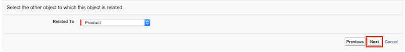
-
Fill in the Field Label, Field Name, and Child Relationship Name fields, then click Next.
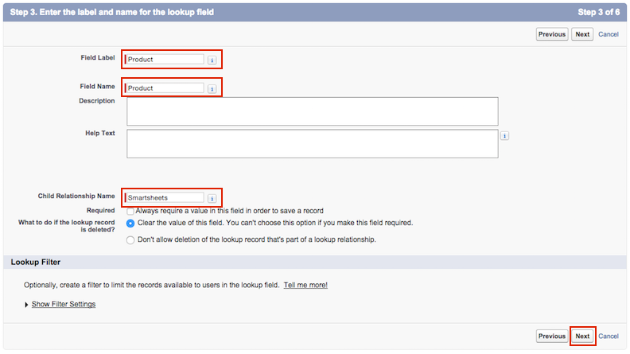
-
Choose the appropriate field-level security for your new lookup field, then click Next.
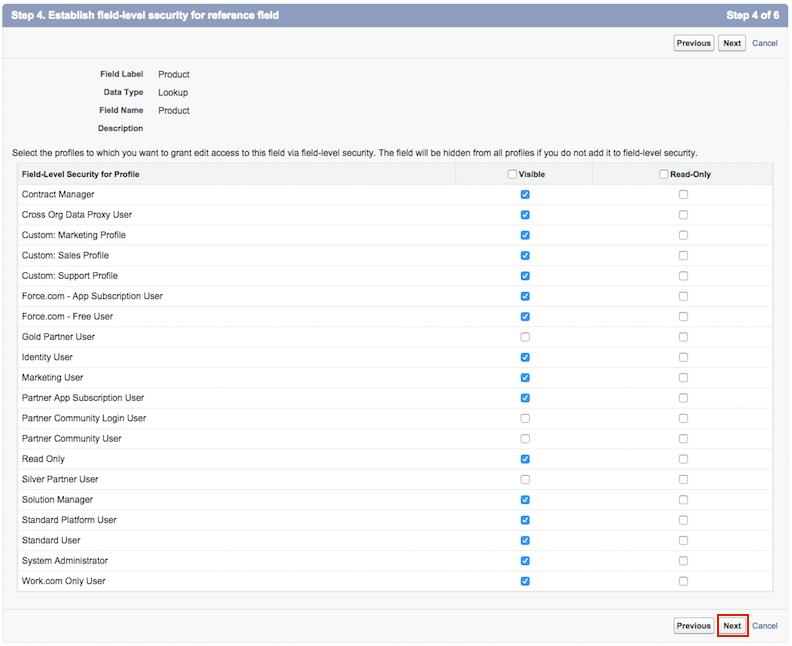
-
Confirm the default settings, then click Next.
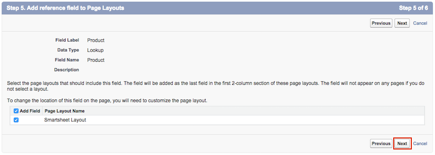
-
Accept or change the default related list label of Smartsheets, then click Save. You have now enabled the linking of Smartsheets to the selected object.
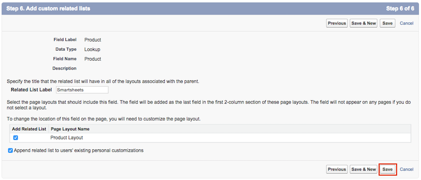
Add Smartsheets Related List
Use the steps below to add a Smartsheets related list to the page layout(s) for standard Salesforce objects or for custom objects.
-
For a standard Salesforce object:
- Go to Setup > Customize > Accounts > Page Layouts.
- Click Edit next to the page layout you want to change (e.g. Account (Sales) layout).
-
For a custom object:
- Go to Setup > Create > Objects.
- Click the label for the custom object.
- In the Page Layouts section, click Edit next to the page layout you want to change.
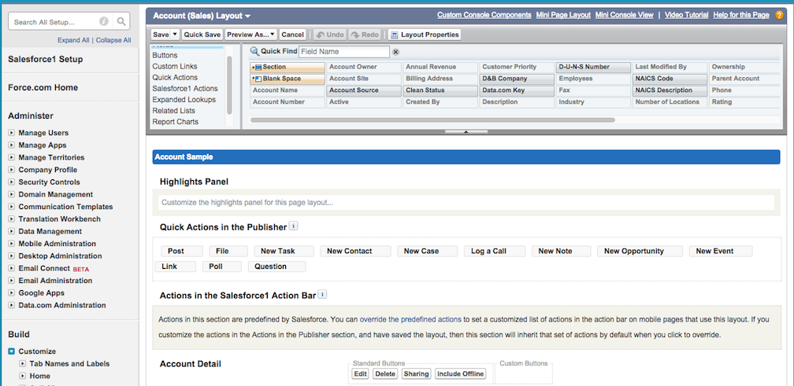
-
Click Related Lists on the left side of the page header.
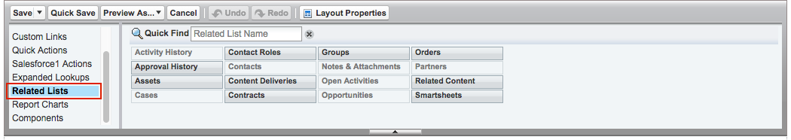
-
Drag the Smartsheets related list from the list picker in the page header to the desired location in your page layout.
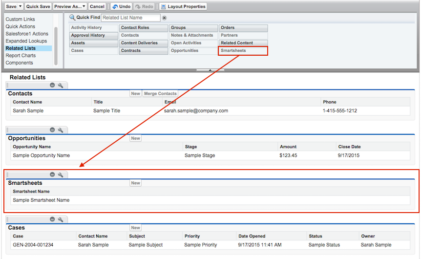
-
In the page layout, click the wrench icon next to the Smartsheets list you just dragged.
-
Configure Columns for the related list:
-
In the Available Fields list, click Description, and then click the Add button (right arrow) to add it.
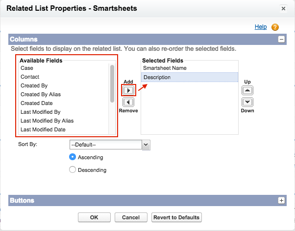
-
In the Available Fields list, click Description, and then click the Add button (right arrow) to add it.
-
Configure Buttons for the related list:
- Click the + (plus) icon on the right side of the Buttons section to expand the Button properties.
- Click Link Existing Smartsheet and Launch Smartsheet from the Available Buttons list.
- Click the Add button (right arrow).
- Click the Launch Smartsheet button in the Selected Buttons list.
- Click the Down button (down arrow) to move it after the Link Existing Smartsheet button.
- Click OK.
-
Click Save.
-
You may be prompted to overwrite users’ personal related list customizations.
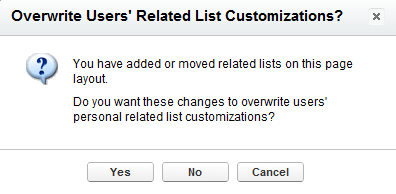
- Select Yes if you want the users to see the new Smartsheets related list you just added.
- If you answer No, users who have customized their related lists must manually add the Smartsheets related list.
- Select Yes if you want the users to see the new Smartsheets related list you just added.
Add link to Home Page sidebar
This is an optional step that gives your users an easy way to open Smartsheet by adding a Launch Smartsheet link to the Home Page sidebar.
To add a Launch Smartsheet link to the Home Page sidebar:
-
Under Setup, select Customize > Home > Home Page Layouts.
-
Click Edit next to the home page layout you want to change.
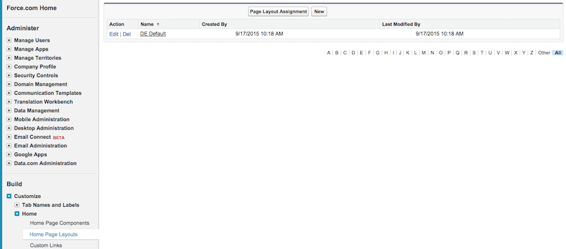
-
Select the checkbox for Smartsheet, then click Next.
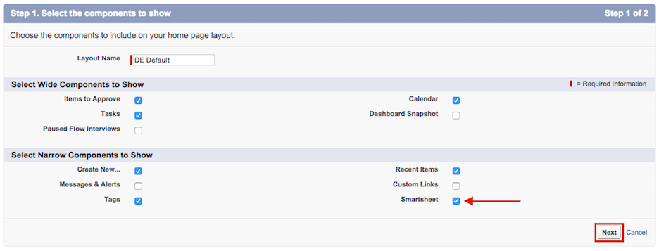
-
(Optional) Reorder the Smartsheet component, then click Save.
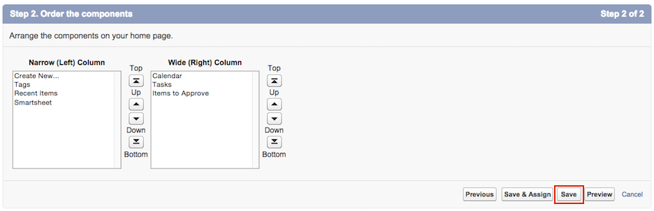
Hide the Application & Tab
Since Smartsheet for Salesforce is mainly used to link Smartsheets to other objects in Salesforce, we recommend following these steps to hide the Smartsheet for Salesforce application and Smartsheets tab from users.
To hide the Smartsheet for Salesforce application and tab::
-
Within Administration Setup, select Manage Users > Profiles.
-
Click Edit next to the profile that you want to configure.
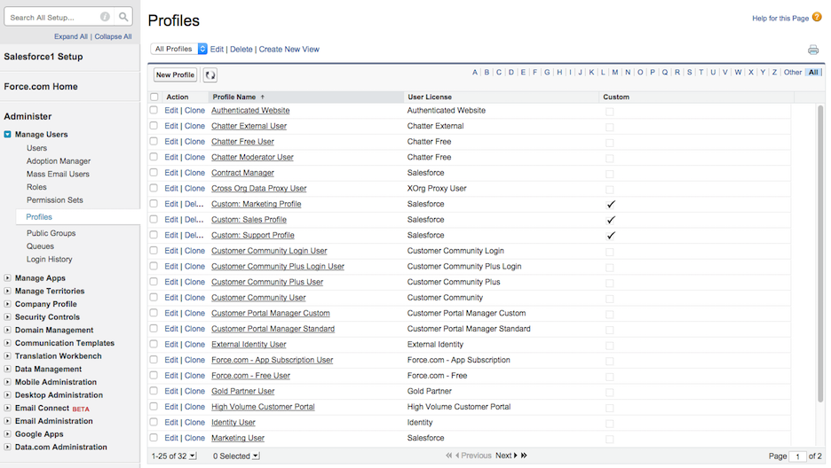
-
Under Custom App Settings, clear the Smartsheet checkbox.
-
Under Tab Settings, change the Smartsheets dropdown to Tab Hidden.
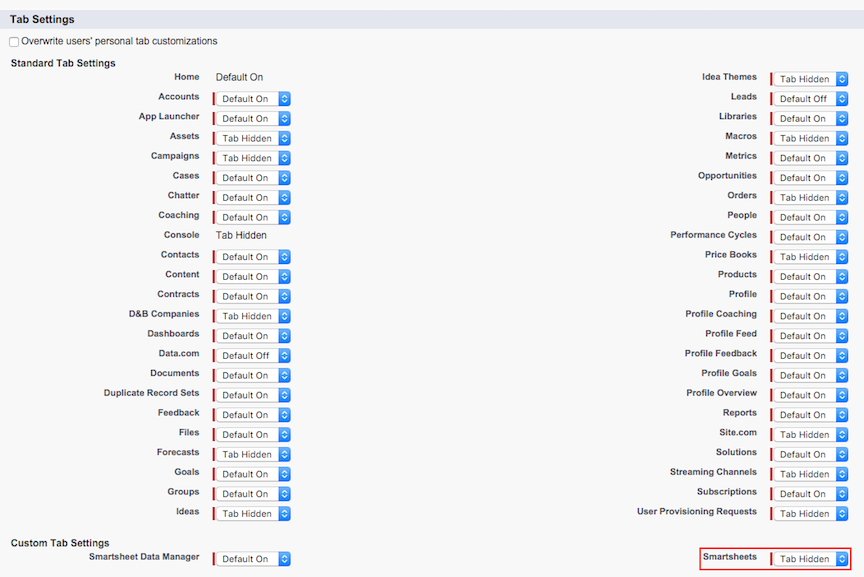
-
Click Save.
FAQ
Communication Error
You may encounter this error message when attempting to use the Smartsheet for Salesforce App:
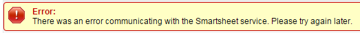
If you see this error, it is because you are running version 1.5 or earlier of the Smartsheet for Salesforce app. In order to restore functionality, you will need to update to the latest version of the Smartsheet for Salesforce app.
Data Manager - Beta
Starting with version 2.2, the Smartsheet for Salesforce app also includes the Data Manager feature (currently in beta). The Data Manager allows you to export Salesforce data to Smartsheet, import Smartsheet data into Salesforce, and save export and import configurations as reusable workflows that you can use any time.
Benefits of using the Data Manager include, but are not limited to, the following:
- Use Smartsheet to publish selected Salesforce data and share with internal and external stakeholders for review and feedback.
- Use Smartsheet as a light-weight data editing tool to make bulk changes to your Salesforce data. Example: export your selected Opportunities to Smartsheet, update, and import them back into Salesforce.
- Enable your project managers and other stakeholders to view and update Salesforce data using Smartsheet.
- Import your Smartsheet data into Salesforce so you can include it in your Salesforce reports.
Private Beta
The Data Manager feature is currently available via private beta only. Private beta is a limited enrollment program during which we will work with a select group of Smartsheet customers to test and improve our Data Manager for Salesforce. Participants will not only get early access to the app, but will also help us shape its roadmap.
How long will the private beta last?
Before we release our app to the public, we want to make sure it is stable, performs well, and is sufficiently comprehensive to address key customer scenarios. Once we feel that these criteria have been met, the beta will be phased out and we will begin a public release. Updates will be provided once we are closer to closing the beta.
Who is eligible to participate in the private beta?
We are looking for power users that:
- Are current or prospective Salesforce users.
- Have access to Salesforce today, either in sandbox or production.
- Understand that this is beta software and may have issues.
- Are willing to invest the time in testing the software.
- Are willing to provide feedback on usability, defects or performance.
Current Smartsheet customers can apply to participate in the private beta (see the next section for enrollment instructions).
Private Beta Enrollment
Smartsheet users who do not belong to an Enterprise account or Trial account can request access to the private beta by using the online signup form. We will review your application and let you know whether you are a good fit for the private beta. If approved, this will enable access to the Data Manager feature of the Smartsheeet for Salesforce app during its beta phase. Public release will be limited to Enterprise accounts only.
Requirements
- Smartsheet user license.
- Access to Salesforce sandbox or production instance.
- Smartsheet for Salesforce version 2.2 or later.
Installation - Beta
Version 2.2 (and higher) of the Smartsheet for Salesforce app includes the Data Manager feature. For information about installing the Smartsheet for Salesforce app, see Installation.
Configuration - Beta
The Smartsheet for Salesforce app (version 2.2 and higher) contains two sets of features:
The “legacy” features which allow linking sheets to standard or custom objects (via related lists). These “legacy” features are production quality and are not the focus of the private beta program - they have not changed and continue to work as before. If you are interested in using these features, your Salesforce administrator must follow the Installation and Configuraton instructions as described earlier in this documentation.
The “Data Manager” feature is a brand new set of capabilities that enables data export to Smartsheet, data import from Smartsheet, and two-way manual data updates. The Data Manager feature is available via a private beta program that is designed to provide our customers with early access to these new capabilities so that they can test-drive them and provide feedback to Smartsheet. No additional configuration is required to enable the Data Manager.
Accessing Data Manager
Navigate to the app menu and select Smartsheet from the dropdown:
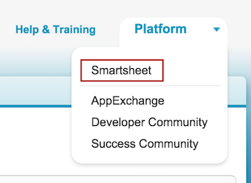
That will immediately take you to the Smartsheet Data Manager tab:
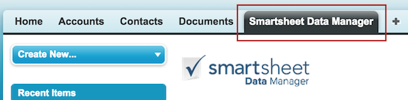
Accepting the User Agreement
You will be asked to accept the private beta user agreement before proceeding:
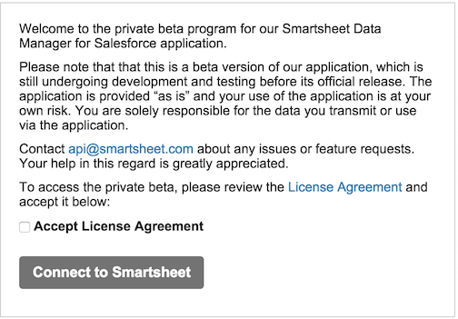
Connecting to Smartsheet
Click Connect to Smartsheet after you check the Accept License Agreement box, then follow the steps to authorize access between the app and your Smartsheet account.
Usage - Beta
Data Manager Dashboard
The Data Manager default view is the Dashboard that includes buttons to create new Export or Import workflows, the list of existing workflows (if any), and the History tab:
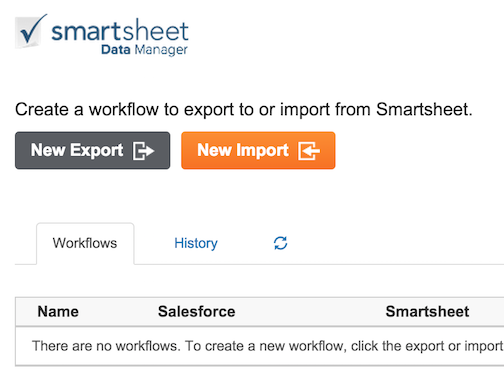
Creating a New Workflow
To create an export or import workflow, click either the New Export or New Import button, then proceed through the 5 steps of the wizard to create the new workflow. At the end of the process, your new export or import workflow will be immediately queued up for execution.
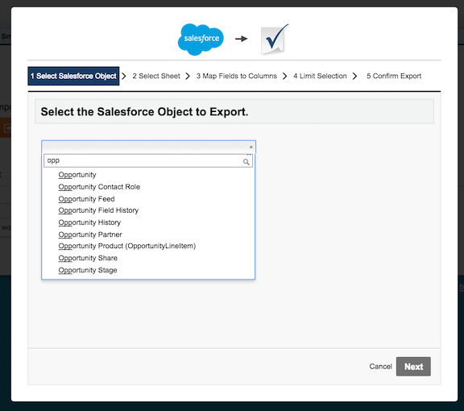
Insert vs Update Logic
Data manager provides the ability to create new records or update existing records in Salesforce. When creating or modifying a workflow, you must map the Salesforce object ID field to a column in Smartsheet that is designated for Salesforce record IDs (“ID column”).
Workflows use the following rules to determine whether a record should be created or updated in Salesforce:
- If a row in the “ID Column” is empty, then a new record is created in Salesforce for that Row.
- If a row in the “ID Column” contains data, then Data Manager assumes a matching record (with that record ID) already exists in Salesforce and attempts to update it.
Here’s the dialogue which prompts you to map your Smartsheet Columns and Salesforce Fields. You can see we’ve mapped the ID Column in Smartsheet to the Opportunity ID Field in Salesforce:
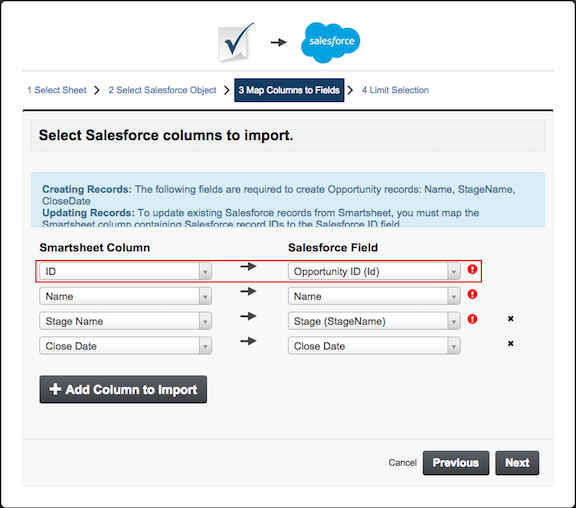
Based on the “ID Column” in the screenshot below, Data Manager will update the first 2 records, and create 1 new record in Salesforce(because the last row contains no data):
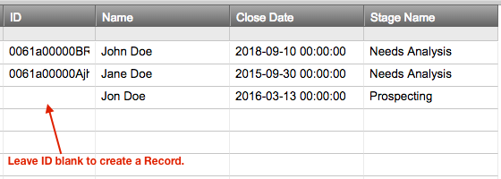
Running an Existing Workflow
Once you create a workflow, you can run it any time from your Dashboard to update the mapped fields in the specified destination with the most current data from the specified source.
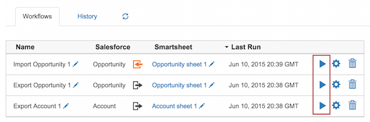
Modifying an Existing Workflow
You can modify an existing workflow (e.g., map additional fields, add filters, etc.) without running it by clicking on the adjacent gear icon.
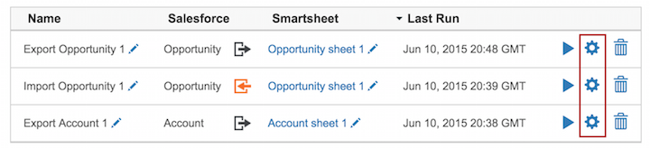
Workflow Status and History
The History tab on the Dashboard lists every workflow that is currently queued or has previously executed. It will also display warnings or error messages if a workflow did not process correctly.
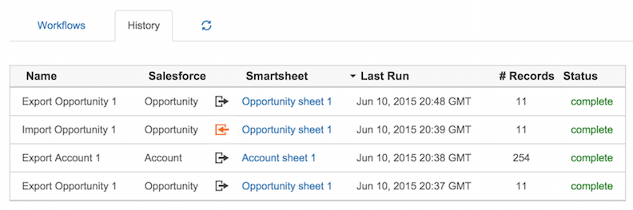
FAQ - Beta
Why am I seeing the “Salesforce integration is not enabled for this Smartsheet user…” error?
After you attempt to Connect to Smartsheet from within the Data Manager, you may see this error message:
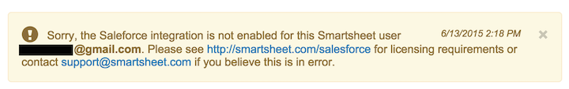
If you see this message, it’s because your Smartsheet account has not been enrolled in the private beta program for the Data Manager feature. Please see the Private Beta Enrollment section for more information, or contact us at api@smartsheet.com if you believe this message is in error.